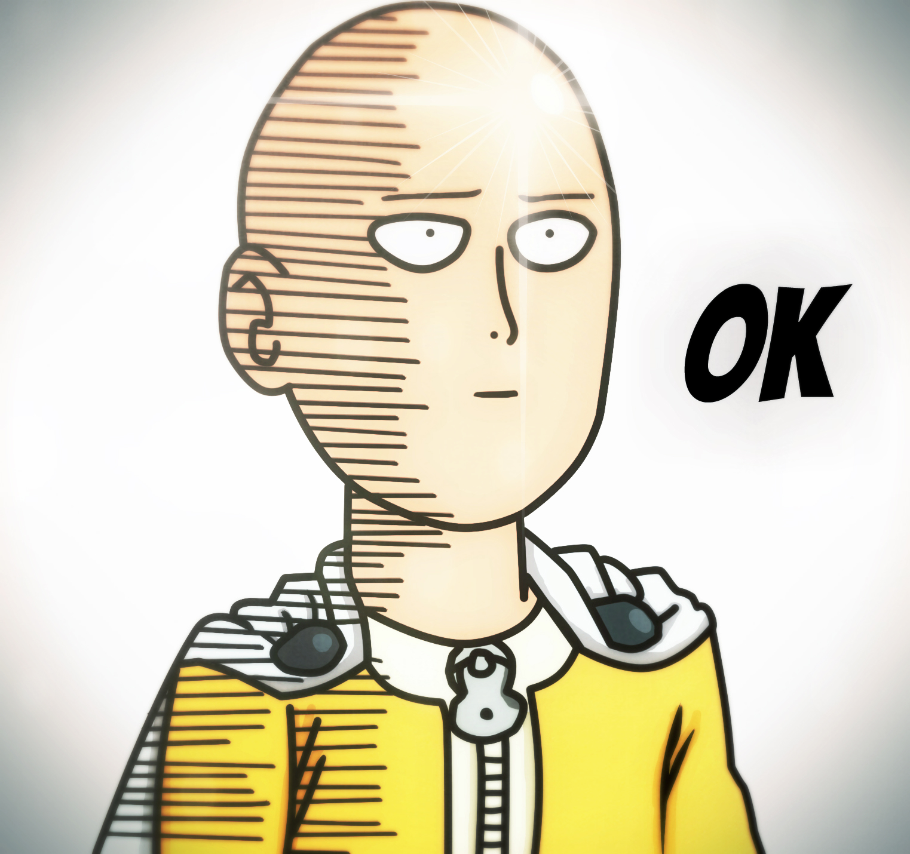

curriculum vitae
perfil profesional
tecnico en nivel superior en laboratorio clinico y banco de sangre ,con amplia experiencia tanto en el sector publico como el privado
datos personales
- nombre:Yonathan adrian cordero stuardo
- fecha de nacimiento :13 de septiembre de 1983
- edad :38 años
- estado civil :casado
- direccion : dos oriente 8542 , la cisterna
- telefono : 951493930
- e-mail :ycstuardo@gmail.com
estudios
- centro de formacion tecnica enac
- carrera de tecnico en laboratorio clinico y banco de sangre
experencia laboral
- hospital san jose : banco de sangre
atencion de donantes , transfusiones a pacientes
- laboratorio clinico vidaintegra
toma de muestras ,microbiologia ,hematologia ,bioquimica
redes sociales
instagram
enlaces
opening one punch man
fuente
portafolio